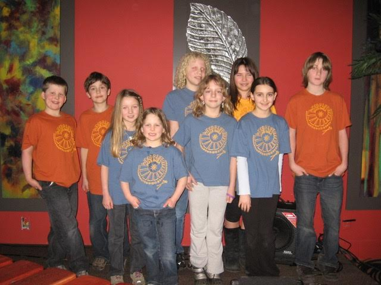

ANCIENT WAYS (ZIMBABWE)
Woodruff students raised money for supplies & food for preschool children
MATOTO (GUINEA)
Woodruff students contributed to building of Bountouraby Community School
NHIMBE FOR PROGRESS (ZIMBABWE)
Woodruff students contributed to the building of wells & water access
MATANHO (ZIMBABWE)
Marimba Mammas contributed to micro loans for women
UWR-WA (GHANA)
Fundraising for Portable UltraSound equipment for expectant mamas
GLASSWATERS (NEPAL)
Woodruff students raised $500 towards instruments for children in 2 group homes
BLINK NOW (NEPAL)
Woodruff students raised $900 towards School & Children’s Home in The Kopila Valley
LOCAL CHARITIES
Marimba Youth provide entertainment in Cowichan Bay for Cancer Fundraiser
